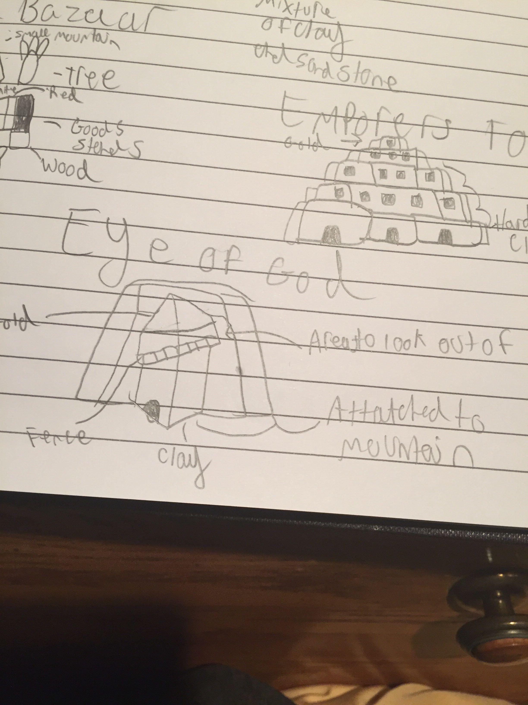
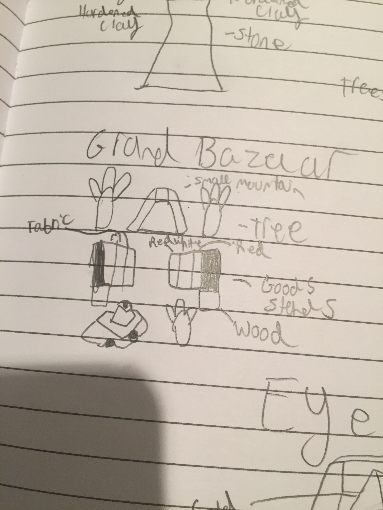
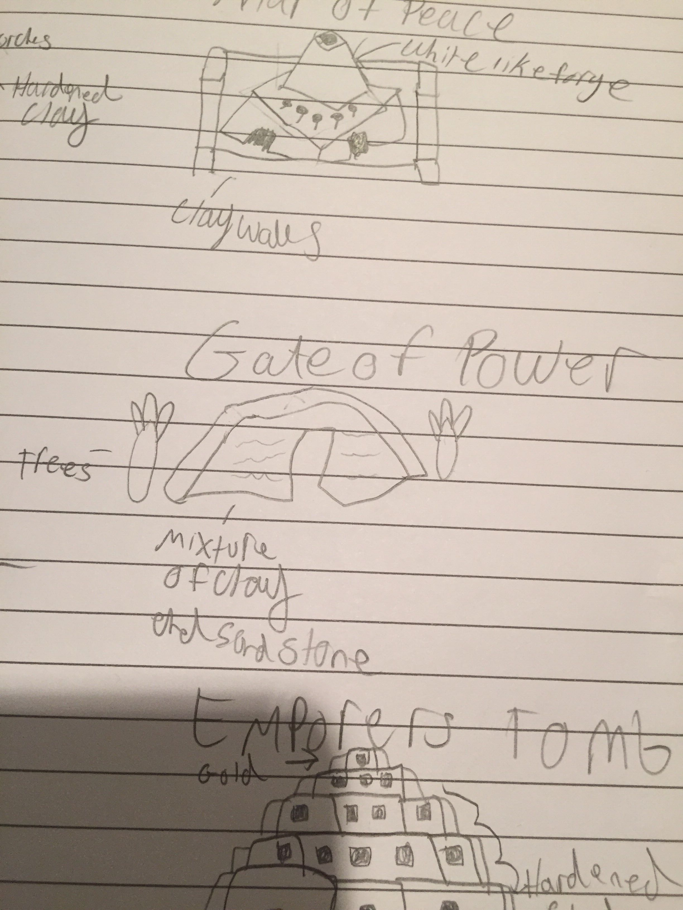
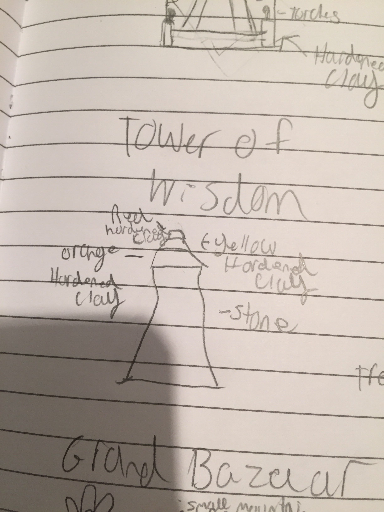
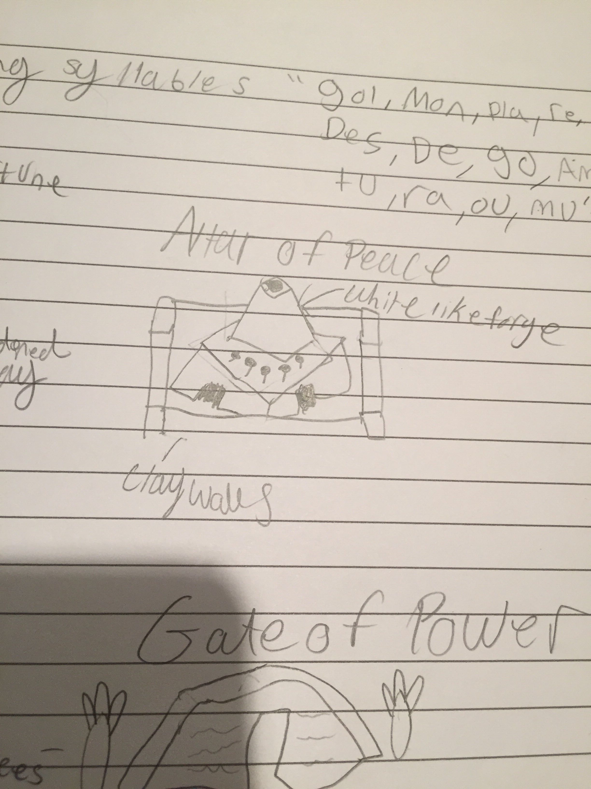
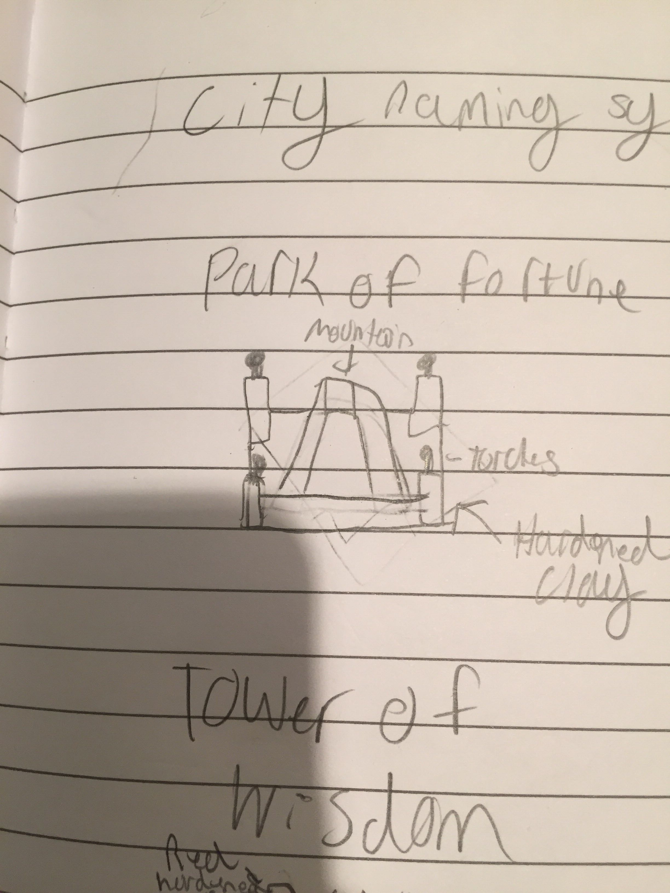
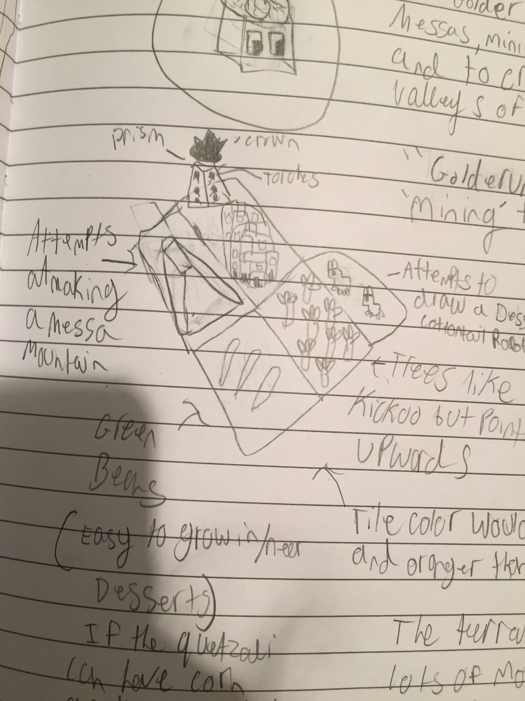

Golderùm (Gol-dur-oom)
The Golderùm tribe inhabits the squares mesa’s. Mining and selling to make profit and to create bustling cities in the valleys of the mesa.
Golderùm starts the game with the mining tech.
Spawn rates
Mountains+ Ore+ Fruit- Animals- Forests-
Visual Design
Colours
- Ground: orange (more so than Oumaji but not so much as Zebasi)
- Borders: brownish dark orange
Terrain
- Fruit: green beans (a food able to easily grow in heat)
- Trees: similar to kickoo but the leaves pointed downwards and less saturated
- Animal: 2 rabbits based off a cottontail rabbit native to the dessert of North America (riders and knights ride big rabbits)
- Mountains: Mesas
Buildings
- City buildings: similar to Pueblo style houses
- Capital prism: a normal shape with torches on the walls
City name syllables
Gol Mon Pla Re Des De Go Am Tu Ra Ou Mu
Images

Eye of God

Grand Bazaar

Gate of Power

Tower of Wisdom

Altar of Peace

Park of Fortune

Sample Terrain